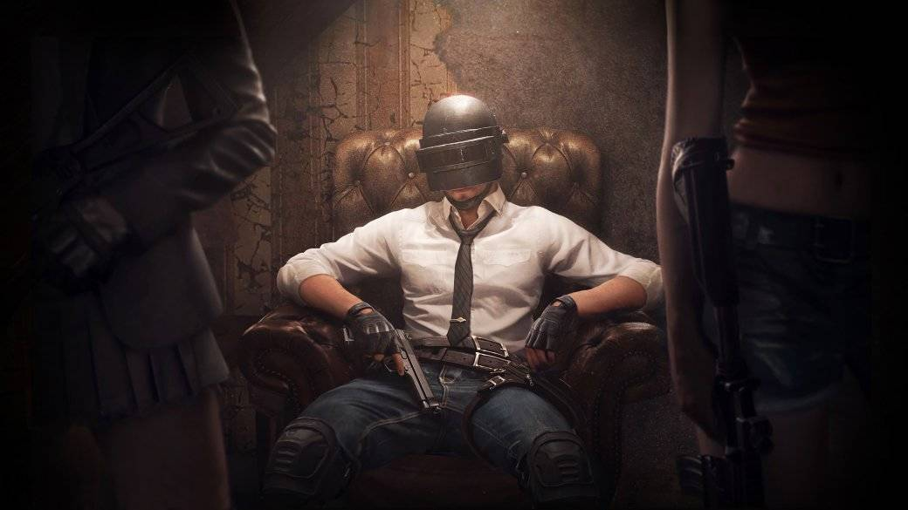
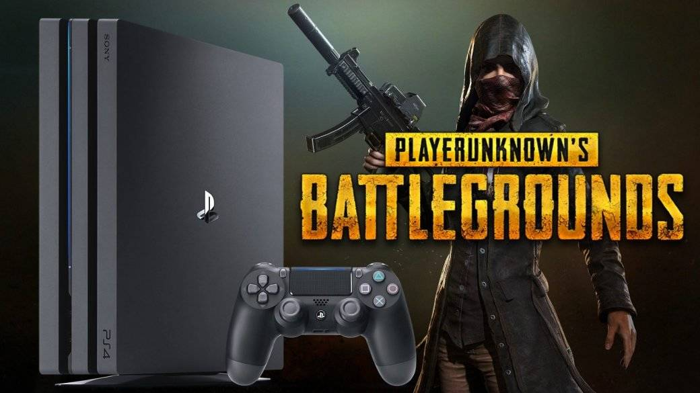

В соревновательной среде PUBG прогремел громкий скандал — дюжина игроков была обвинена в нечестной игре, в том числе и в рамках турнирных матчей. Последствия не катастрофичны, но заметны. Квалификация Contenders League была перенесена на одну неделю, а на всех предстоящих соревнованиях будет обязательная проверка данных учетных записей, которыми владеют игроки. «Канобу» разбирается в этом скандале и пытается найти ответ на вопрос: «что делать дальше?».
Киберспорт проник в PUBG еще на стадии раннего доступа. Gamescom Invitational 2017, прошедший в Кельне, дал четко понять две вещи. Во-первых, появилась новая киберспортивная игра. Во-вторых, PUBG полностью изменила восприятие того, какой должна быть соревновательная игра. Зависимость от лутбоксов и большое количество одновременно играющих человек на карте не помешали закрепиться игре в киберспорте.
Но Gamescom Invitational вскрыл и ряд проблем соревновательной части игры. Режим наблюдателя был плох, настройки серверов приводили к вялой игре, а влияния случая было чрезмерно высоким. Кроме того, были очевидны и проблемы самой игры — спайки, просадки кадров в секунду и отвратительная графика. К счастью, с некоторыми проблемами девелоперам удалось справиться, но осталась главная — читы.
Обман, неуловимый глазом
Проблема с читерами существует уже полтора года, но обострение случилось лишь в апреле. Ситуация стала стремительно ухудшаться — уже в начале июля PUBG Corp. пришлось забанить Майка «shroud» Гржесика. В прямом эфире его подвез на летающей машине читер. Это видела аудитория стримера.
Баны являются основным методом борьбы с нечестными игроками. Волны запретов регулярно затрагивают десятки тысяч учетных записей, но это лишь немного ослабляет симптомы.
В качестве детектора читеров изначально использовался BattlEye. Он также используется в ArmA III, Rainbow Six: Siege, Fortnite и еще в нескольких проектах. Это хороший анти-чит, но, по мнению разработчиков, его было недостаточно. В январе прошлого года его усовершенствовали, научив отлавливать сторонние программы.
В будущем разработчики планируют внедрить машинное обучение, «баны по железу» и даже судебные иски. Но это все в будущем. А сейчас должный уровень безопасности можно обеспечить только на LAN-соревнованиях.
Онлайн-жулики
Очевидно, что текущие методы борьбы не совсем действенны. Особенно остро вопрос стоит в онлайн-лигах и других сетевых соревнованиях. Вычислить среди участников читера можно только проведя тщательное расследование, на что у организаторов обычно не хватает ни ресурсов, ни инструментов.
Ранее отлов мерзавцев лежал на энтузиастах. Например, благодаря таким расследованиям, бан получил Владислав «PUDGE228» Кислов. Он отыграл в составе Windigo меньше недели.
Из-за его бана пострадала вся команда — игроки были отстранены на два года. В итоге организация Windigo Gaming закрыла подразделение по этой игре.
Сейчас этим занимаются «специально обученные люди». 31 декабря сотрудники PUBG Corp. дисквалифицировали четверых игроков NPL. 7 января комиссия PUBG Esports провела еще одно расследование и уличила в нечестной игре еще двенадцать игроков, при этом часть из них была забанена за пособничество. Часть обвиненных получили дисквалификацию на два года, еще часть — на три.
Отметим, что наказания коснулись непосредственно самих нарушителей. Киберспортивные же организации остались со своими слотами на турнирах, но чтобы участвовать дальше им нужно поменять составы.
Что делать?
Сейчас у PUBG Corp. мало вариантов. Самый очевидный и один из самых действенных — продолжать гнуть свою линию. Специальных комиссий, просматривающих демо с подозрительными моментами, а также реддит-энтузиастов хватит, чтобы покрыть все крупные турниры в сезоне. Главный минус такого подхода — онлайн-турниры находятся под постоянной угрозой со стороны читеров.
Еще один вариант — создание специального клиента для соревнований, который будет запускаться на особых условиях, либо каким-то способом отслеживать сторонние программы и активность пользователя. Учитывая, что PUBG Corp. уже ведет три разных клиента, создание еще одного станет настоящей проблемой.
PUBG недавно вышла на PS 4 и у команды разработки хватает дел
Можно почаще прибегать к внутриигровой статистике — отслеживать дистанцию убийства, позицию игрока и его перемещения, скорость наведения и время удержания прицела, а также процент убийств в голову. А можно находить экстремальные значения и «срезать» самых ярых пользователей аим-ботов и спид-хаков.
Сейчас киберспортивная часть PUBG в плохом положении. Вряд ли недавно забаненные игроки были последними читерами. После кампании FIX PUBG дела у игры пошли лучше и опять начал расти онлайн, но теперь PUBG Corp. нужно побороть самую главную и сложную проблему — читеров. От успеха в этом начинании зависит будущее игры в киберспорте.